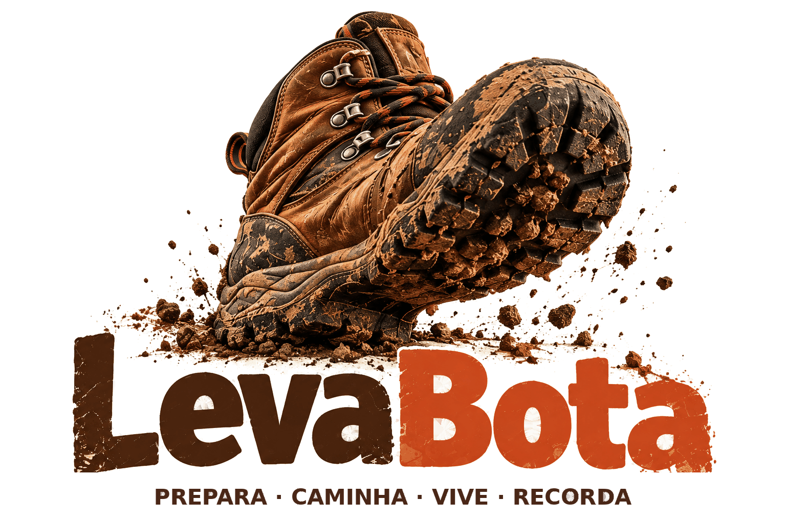
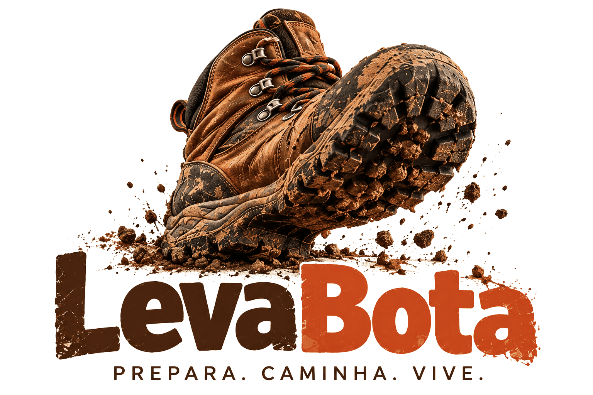

Prepara. Caminha. Vive.
O essencial para saberes o que levar.

Planear caminhada
Começamos apenas pelo essencial.
Sem GPX. A preparação continua a funcionar com os dados básicos.
Melhora a análise com o percurso real.
Atualiza para obter a previsão real para a hora da caminhada.
Marca o que já está preparado.
Guarda aqui o PDF oficial, folheto ou outra documentação útil para consultares durante a caminhada, mesmo sem rede.
Estas ações estão sempre disponíveis.
Quando terminares, completa o percurso realmente feito e regista como correu.
Editar locais
Escolhe o que merece aparecer no teu mapa.
O GPX original não é alterado. Adiciona fotografias aos locais que queres apresentar e marca ⭐ nos pontos especiais.
Seleciona várias fotografias de uma vez. A LevaBota tenta colocá-las automaticamente através da hora da fotografia e do GPX realizado.
Finalizar caminhada
Completa apenas o que fizer sentido.
Importa o GPX que gravaste realmente. O percurso planeado continua guardado como referência.
O nome encontrado no GPX aparece aqui. Podes editá-lo antes de guardar.
O percurso planeado continuará guardado para referência.
Se fotografaste o painel/cartaz no início do percurso, guarda-o aqui como referência da caminhada.
Guarda o registo final. Podes voltar a editá-lo mais tarde.